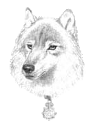

|
|
AnguaAngua | |
C'est un agent du Guet municipal d'Ankh-Morpork. Jeune femme relativement belle aux cheveux blond cendré la plus grande partie du mois. En effet, à la pleine lune, elle se transforme en louve-Garou jouissant d'une intelligence humaine et de la dose l'instinct considéré comme allant de sois dans les critères des loups. Elle s'est engagée dans le Guet dans le cadre d'une campagne d'aide à l'emplois des personnes, disons, non conformes au critères de la normalité communément admise dans le cadre d'une étude de l'humanité dite «normale».  Elle entretient une liaison avec le caporal Carotte Fondeurenfersson, lui aussi du Guet municipal d'Ankh-Morpork. A vrais dire, Carotte, dont le principal loisir consiste à se promener à pied dans les rues d'Ankh-Morpork, est plus que ravi d'oublier le léger inconvénient que connaît chaque mois leur relation en échange d'une petite amie toujours disposée à faire une balade en ville. Angua est aussi la seule humaine (ou du moins qui y ressemble très fortement du point de vue canin) à entendre ce que dit Gaspode. | |
| Elle se transforme dans : Le Guet des Orfèvres, Pieds d'Argile, Va-t-en-guerre. |